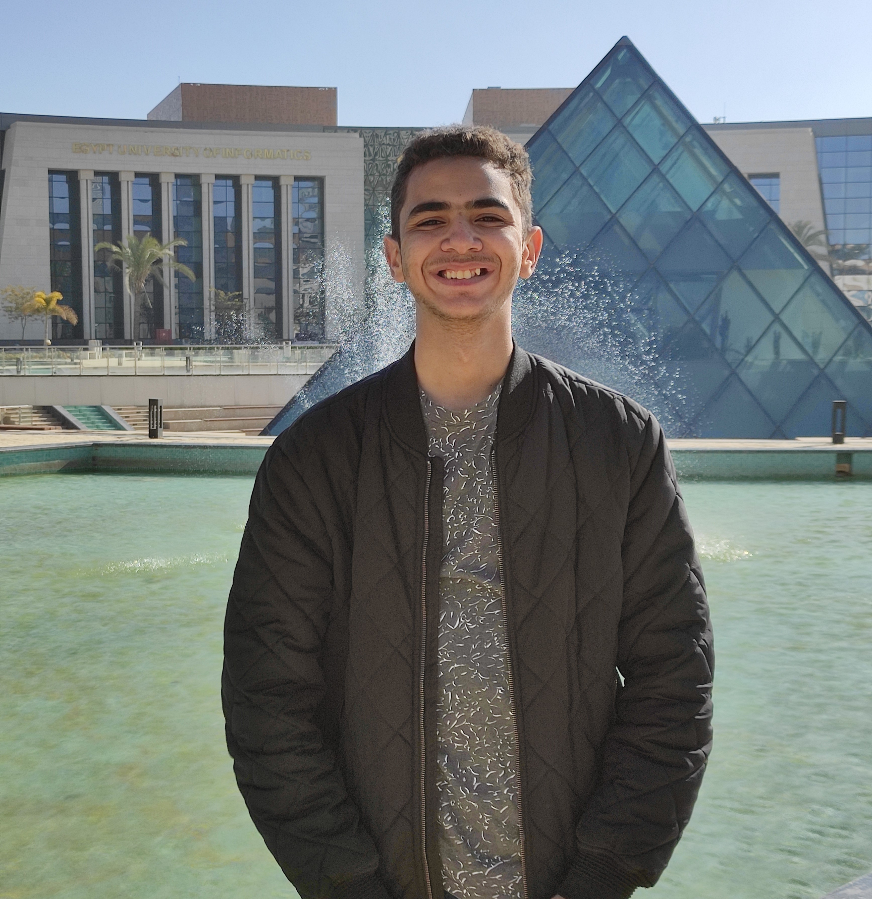

Aly Essam's Resume

About me
Hardworking College Student seeking employment.
Bringing forth a motivated attitude and a variety of powerful skills.
Adept in various social media platforms and office technology programs.
Committed to utilizing my skills to further the mission of a company.
Education
- Al-Farouk Islamic Language School
- Higher Technological Institute, Computer Science Major
Work Experience
- FreeLancing Graphic designer (2018-2020)
- Graphic designer at CDC Middle East (2020-2022)
- Organizer at Arab Security Confrence (2022-2023)
- Senior graphic designer at Blue Siruis Studios (2022-2024)
Skills
- Python
- C++
- Microsoft Office Suite
- Adobe Photoshop
- Blender
-
Operating Systems
- Micorsoft Windows
- Linux
- Basic Knowledge of Apple MacOS
Awards and Certfications
-
TryHackMe
- Linux Fundamentals : Part 1, 2 and 3
- Pre Security Learning Path
- Introduction to Cyber Security
- Jr.Penetration Tester
- Advent of Cyber 2022
-
Tcm Security
- Practical Ethical Hacking
- Practical Web Application Security and Testing
- Certficate of Appretiaiton